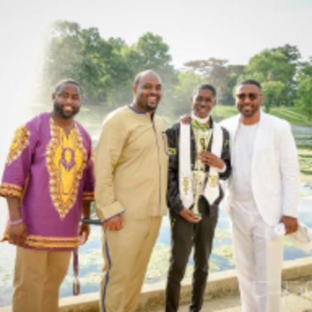

My name is Derek Tillman. I'm a dancer and I also been part of a step called Family of Vison (FOV). They have a elementry (Boy of Vision, (BOV)), middle school(Young Men of Vision (YMOV)), and high school team(Gentlemen of Vison,(GOV)). I've been stepping for seven years. I joined when I was in the 6th grade, I've learned a lot while being in the program. I learned how to become a young getlemen and how to become a leader in the real world. I was the president of the middle school team my 8th grade year and the high school team my senior year.